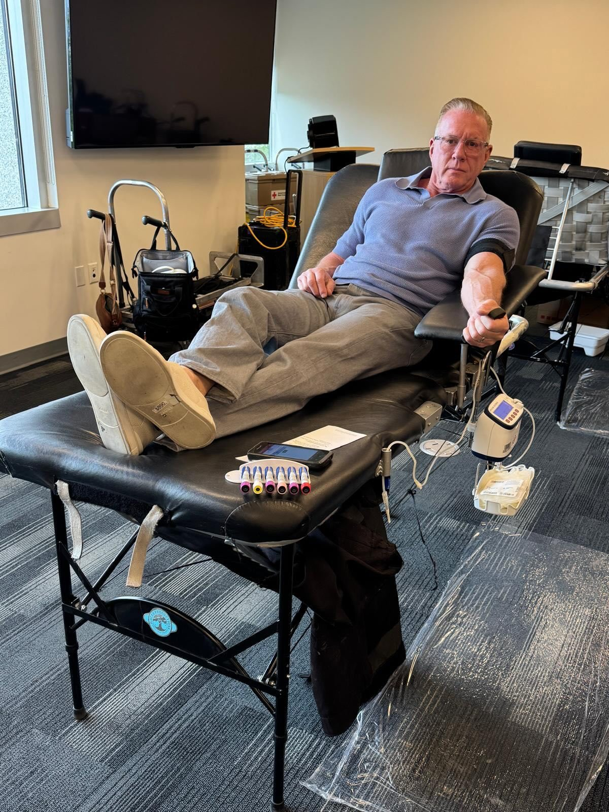

Believe
there’s
more ahead.
Tim is a Reconnaissance Marine and a retired FBI Special Agent, with operations in twenty-six countries behind him. This is the story the formulas came from.
Start the climb
Tim, during his service years
Twenty-six countries.
Reconnaissance Marine, then FBI Special Agent. Decades of carrying a pack, clearing doors and keeping a standard, in whatever country the work was in.
The training never stopped. It was the job, and then it was the habit, and then it was the identity.

Then he tore both hamstring tendons.
A double hamstring tendon tear. The kind of injury that ends things quietly: first the training, then the standard, then the plans.
At the low point he could not leg curl five pounds.
Standard recovery was not enough.
So he treated recovery like an operation. He read the research, priced the single-ingredient market, and spent three years formulating what he needed to rebuild, for his own use, at full doses.
Those formulas became P2 Core, Fuel, Reveille and Repair.
Hunting at 11,000 feet in Mongolia.
Eleven months after the tear, he was hunting in the mountains of Mongolia at 11,000 feet. He found sheep hunting at 57.
Not a comeback story about turning back any clock. A story about the next climb.
Your first prime does not have to be your last.
Tim · Founder, Prime2Performance